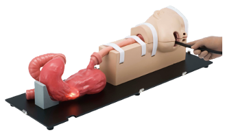

Equipos dedicados a entrenamiento simulación de paciente

M40
KYOTO KAGAKU
Colonoscopia y Esofagogastroduodenoscopia - Ofrece una variedad de niveles de dificultad. Desde casos simples y sin complicaciones hasta casos complejos 2. El tubo de colon puede hacerse hermético, lo que permite la insuflación y succión de aire 3. La abertura del esfínter anal se puede manipular con una bomba manual de bola
Simulador de embarazo - Al intercambiar varias partes,se pueden practicar procedimientos como el examen externo de una mujer embarazada, el examen interno durante las etapas del parto, la asistencia obstétrica práctica, la sutura perineal de laceraciones blandas del canal del parto, etc.
Simulador de Parto - Se puede practicar una serie de técnicas de partería como el diagnóstico del inicio del trabajo de parto, la asistencia obstétrica y la sutura perineal intercambiando varias partes.
Simulador para inyección - El modelo está diseñado para simular la sensación real de la estructura esquelética humana requerida para determinar los sitios de inyección correctos.
El simulador "K" contiene 88 casos; 12 casos de sonidos cardíacos normales, 14 casos de simulaciones de enfermedades cardíacas, 10 casos de simulaciones de arritmia y 52 casos de simulaciones de arritmia de ECG
Simulador de recolección de hisopos nasofaríngeos
1. Cuando el hisopo alcance la posición correcta en la cavidad nasal, el hisopo se pigmentará en azul
2. Se pueden practicar formas de usar el bajalenguas con hisopos.
3. La forma de la cavidad nasal entre derecha e izquierda es diferente.
El kit Kitaro® DryLab & WetLab simula las diferentes etapas de la cirugía de cataratas y permite a los cirujanos en formación practicar la técnica repetidamente sin la complicación adicional de largos tiempos de preparación y costosas muestras de tejido vivo.